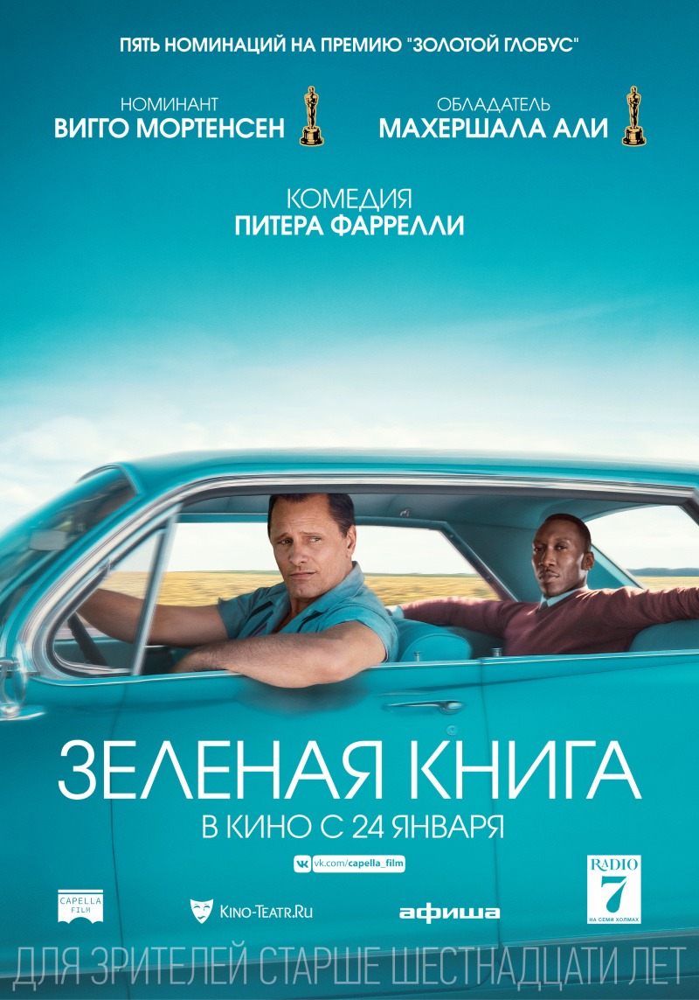

Зеленая книга
1960-е годы. После закрытия нью-йоркского ночного клуба на ремонт вышибала Тони по прозвищу Болтун ищет подработку на пару месяцев. Как раз в это время Дон Ширли, утонченный светский лев, богатый и талантливый чернокожий музыкант, исполняющий классическую музыку, собирается в турне по южным штатам, где ещё сильны расистские убеждения и царит сегрегация. Он нанимает Тони в качестве водителя, телохранителя и человека, способного решать текущие проблемы. У этих двоих так мало общего, и эта поездка навсегда изменит жизнь обоих.